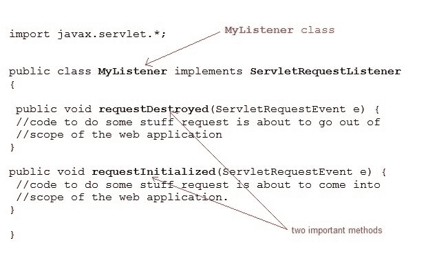

Servlet 中的ServletRequestEvent和ServletRequestListener
原文：https://www.studytonight.com/servlet/servlet-request-event-and-listener.php
ServletRequestEvent 类为 ServletRequest 提供生命周期事件的通知。事件的来源是网络应用的 ServletContext。 ServletRequestListener 接收 ServletRequestEvent 生成的通知，并根据这些通知执行一些指定的任务。
ServletRequestListener 的几个重要方法
| 方法 | 描述 |
| 作废requestDestroyed(ServletRequestEvent e) | 当请求即将超出 web 应用的范围时调用.. |
| 作废requestInitialized(ServletRequestEvent e) | 当请求即将进入 web 应用的范围时调用。 |
ServletRequestListener 示例

因此，可以很容易地实现 ServletRequestListener 接口，并为它提供的两个方法requestDestroyed()和requestInitialized()提供定义。
顾名思义，这些方法将在请求被初始化和销毁时被调用，因此我们可以将它们用于各种目的，比如当请求被销毁时变量清理，或者当请求被接收时执行一些初始检查等等。